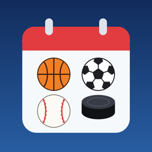

Benchmark Sports Calendar
Team schedules, every calendar.
Get help
Something not syncing, or a team app we don't explain yet? Open a support request and include the name of your team's app or league website. Please don't post your calendar link publicly; it can contain a private key.
Common questions
Where do I find my team's calendar link?
In Benchmark, tap Add a schedule › Where do I find my link? for step-by-step instructions for Crossbar, SportsEngine, GameChanger, TeamSnap, LeagueApps, Sports Connect, sportsYou, ArbiterSports, Google Calendar and others. Look for words like Subscribe, Sync, Calendar Feed or iCal. The link usually starts with webcal:// or ends in .ics.
My Gmail or Outlook calendar isn't in the list.
Benchmark can only write to calendars added to the iPhone's built-in Calendar app. Add the account in Settings › Apps › Calendar › Calendar Accounts, then return to Benchmark. Some work accounts are managed by an employer and don't allow other apps to add events.
How often does it update?
Every time you open the app or pull down on the main screen, and in the background when iOS allows, usually several times a day. You'll get an alert when a game or practice is added, moved or cancelled. You can turn alerts off in Settings.
How do I remove a schedule?
Tap the schedule, then Remove this schedule. You can choose to delete the events Benchmark added or keep them. Benchmark never touches events it didn't create.
Do I need an account?
No. There is no sign-up, and everything stays on your iPhone.
© 2026 Nathaniel Wright